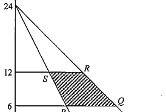

不等式與線性規劃 · 極值

外側直線：$y=24-x$；內側直線：$y=24-2x$。
在 $y=6$：內側 $x=9$（即 $P$）、外側 $x=18$（即 $Q$）。在 $y=12$：內側 $x=6$（即 $S$）、外側 $x=12$（即 $R$）。
令 $f(x,y)=7y-5x+3$，它是 $x$、$y$ 的線性函數，故只需比較四個頂點的函数值。
$$f(P)=7(6)-5(9)+3=0$$
$$f(Q)=7(6)-5(18)+3=-45$$
$$f(R)=7(12)-5(12)+3=27$$
$$f(S)=7(12)-5(6)+3=57$$
最大值 $57$ 在 $S$ 取得。
直觀理解：$y$ 的係數為正、$x$ 的係數為負，所以要「盡量高、盡量左」，$S$ 正是左上角的頂點。答案為 D。